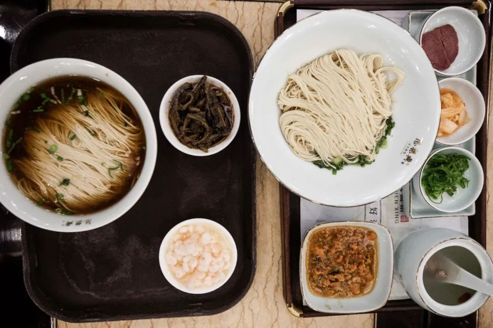

共计3073个字，65张图
上周开始的苏州之行，后来又转到上海，其实是出去自费加班（笑）所以说起话来也就肆无忌惮了
一个医疗器械的会议在苏州博览中心开，时间从上周四开始、一直到上周六。周三下午有一个很重要的视频会议，于是我周三上了最早的一班长沙往上海方向的高铁，坐在苏州石路步行街的高楼上，看着一整片姑苏区的粉墙黛瓦但是加班(笑
我现在好喜欢在每一句话说完后，都打一个括号内加一个“笑”字。好像如果不加上来，语气就会有所不同。实际用上的话其实约同于一个句号full stop但是又不是生硬的分段。目前我还没有什么好点子，于是把想说的话藏在了括号内。
一位之前在新加坡参加各种会议上接触到的一位生产成本经理向我提到了这个会议，说他们也会去设展台。我看了看，在博览中心约同之前我们家在快过年的时候会去参加各种农业博览会之类的，其实就是去看看有没有什么新鲜的小玩意儿买。各种文创市集也算，侧重点不同，农博会主要是一些好吃的、年货，文创市集卖一些真文青、伪文青的东西，古玩市集忽悠一些假货，而我去的这个医疗器械博览会据说能有很多好东西：包括但不限于各种胶、植入器械、法律法规帮助、质量检测、传感材料、包装、加工测试、软件开发。虽然扫一眼过去我对一些公司的了解也不多，于是想着没事，反正别人也要带工程师来。我干嘛不人就直接一家家聊过去。
于是我也像来置办年货的人一样，带着我今年想要买的年货的脑内小单（当然是根据我的博士课题来制订的至于我想disclose到哪一个部分完全取决于这会儿想胡说八道到一个什么程度明人不说暗话暗话挑在明处说）周四一早就往会议去了
会议整体上体现的，姑且算作一种生态吧。我是有些看法的。比如现在大部分科技树，努力的方向在哪里。企业开张要吃饭，开门之后柴米油盐酱醋茶，可以理解。不过相关的企业如果都在卷同一个东西，那不禁就要问问是为什么。
我们以管子为例，管子就还有管子外的涂层。我到展柜上一个个聊过去的时候，很多展位都向我宣称，想找到任何大小和形貌的管子，在这里都能找到；我到做胶的地方，告诉我说只要给他两种材料，想把任何这两种材料胶在一起，Ta都能做到；我到做涂层的地方，涂层的师傅从水瓶里拿出来了一根管子，说这一边我们有涂层、那一边我们没有涂层，你摸摸看，明显能感觉到一边摩擦力大、一边就很光滑，这些我们都能控制。
听起来很妙对吧。但很深刻的东西依然不是我们解决。比如做管子就会宣称自己在做介入治疗，介入心血管疾病的时候，那个是为人所熟知的心脏支架、或者搭桥：有秩序地控制心血管的扩张。而管材之外，这些企业就放下了；管材加涂层，在人体外做一个人工肾，这也是每每有人肾脏出问题需要进行透析换血，从身体里把血液循环引出去，在体外半透了血液中的杂质之后，又循环回体内。当然献血时候献成分血也是用上了这个原理。触碰到这些原理的东西，我在这一次的会展中没有看到。
你说企业们懂不懂呢？很明显是懂的。至于懂了之后到底能贡献多少呢？外行很容易骗过去。管材、图层、加工工艺应用于不同的生物介入治疗，很容易就能搭上边。同样是在触碰人类生命科学的外延时想方设法。但从原理上会怎么进行科研创新的攻破呢？我不置可否。也许是因为我平常看科研文献太多，也许是我已经习惯了博士生的科研方式，也许我不是在同没找着工程师谈（但其实上很多公司的高工也到了现场基本上我都不是在跟销售谈而是在跟高工们谈）
后来和某材料与装备大厂的项目负责人谈及为什么会来这次展会，他说他们也是来试试水，看看最近材料加工与流变成型这一块的行情如何。我们的整体体验是，这一次看到的百分之八十的企业都还在艰难求生存，在卷集采的赛道。集采，是集中采购的缩写。上层厂家在往底层工艺找目标的时候，我们姑且可以把产品质量和产品价格定义为具有互斥、相悖关系的组合——质量高价格高、质量低价格低。有例外，但大抵服从这一分布。集中采购以其量大，而专门来和粗糙工艺谈大项目，一出手就是一笔大单。后来我才知道，像这样的博览会主要都是在争取集采的订单，因为这样就是直接来的现转化收益，而更少把精力放在争取像我这样会去跟他们谈具体工艺改进以及材料增益的小众。
也不是没有能聊下去的。总结发现能继续有一些更多探讨机会的，是这三类：科研院校的转化医学、深圳主导的加工厂商、外资背景的特种材料。并非特意说大陆这边环境在生物医疗器械做得有多么糟，而是说这里有很多道不小的，每个在这里待久一点都能感受到的所知所说与所做之间存在的沟壑。跨过去，在那边走走，是兴趣；不跨过去，在这边溜达，也许是生存。左右翼。激进对保守。万幸我还能找到我想找到的，只是也能呼吸到不一样的气息。
虽然是医疗器械，但是会议也有一些部分缺失了：比如一些医疗力学检测、残疾人汽车之类。这些我还蛮想看的，大抵觉得很有趣。没看到也许是主办方没有邀请吧。蹲一个想象力。
要开三天的博览会，结果一天就把我想要干的事都干完了。事情和预期有别，有很多种可能，一种是你这个预案做的完全就是一团糟：对实际可能发生的情况缺乏基本的预期，另一种是这个事情发展得扑朔迷离：谁来了也救不了。
公务搞得有点偏离预期轨道百分之两百五十没关系，至少吃得很好！！住得也不错。苏州背包十年比普通青旅贵至少50%，大概90-100一晚了。但贵也有贵的道理。
周三和赤赤好兄弟去吃陆振兴。秃黄油，笑，苏州老牌再加两个粽子


苏州以前就来过了：平江路、狮子林、拙政园、寒山寺、七里山塘。那应该是我的第一篇尬走，发在2017年的夏天
晚上带着相机和闪光灯从狮子林一直扫街到平江路和仓街附近的小公园，相当于从北寺塔开始，一路把姑苏区扫穿。带上闪光灯，感觉小神牛一路上能把姑苏区点亮三百次。


开完会就去和宇宙一芦吃新梅华，和江宁赛先生一家点了一桌好吃的淮扬菜（笑）可惜手机拿去充电了没拍图，国宴头牌的松鼠鳜鱼依然夸。
周四在会上搭了劲儿。周五直接搭早班高铁冲往上海闵行。
晚上和姐妹们约在虹桥的西塔老太太，感觉像回到了两年前。因为沈阳烤肉太好吃，以致于又没有拍图，笑发财了
周六终于可以睡到晚点醒了。中午和outsider蓝的新婚二位约在绣园苏氏火锅：据说是松鼠鳜鱼大师傅那改出来的番茄锅底，添入苏州本地食材。夸，这次终于记得拍照了嘿嘿这个番茄锅底夸到没朋友
吃完中饭，正准备坐地铁回酒店。还没上地铁，看到一发来的消息。旋即购入晚上去上海静安晶品的票，说走就走。从决定，到人在静安，两个小时比从闵行一的医院到静安还快（笑）
路过一万次静安寺，也没有进来过静安寺。静安寺说法相庄严，新加坡币和马来西亚币要考虑考虑着收（笑）

感觉上海晶品的火烧云，排队比北京蓝港的火烧云快很多。至少这一次四点半我在晶品拿到号，晚上八点就能吃到了。夸。云南菜，火烧云走到哪都能夸出声，本地人Pearl接着夸。色调应该要往洋红再偏一点，不过我是个懒鬼（笑
周日麻烦铁子的铁子来实验室加班。在铁子的铁子的墙上，看到了我另一位铁子挂着的挂历：死前必去的1000个地方（拍图发过去看到回消息笑到要被抓去人体实验室做人体实验）
苏州有趣的。金鸡湖就搞经济，独墅湖就专门读书。在独墅湖吃了餐粤菜，看时间还早，不如回城里逛一波双塔市集。算是乡村振兴系列的农产品吗？我不知道，名气是很大，不过里面没有开空调。转一圈之后没想坐下来，于是作结、告别苏州，回长沙。
一周以来，从新加坡到福州，从福州到长沙。从长沙到苏州，两次往返上海，再从苏州回长沙。七天，五个城市、两张机票、六张火车票。特种兵之行告一段落，开始干小活。